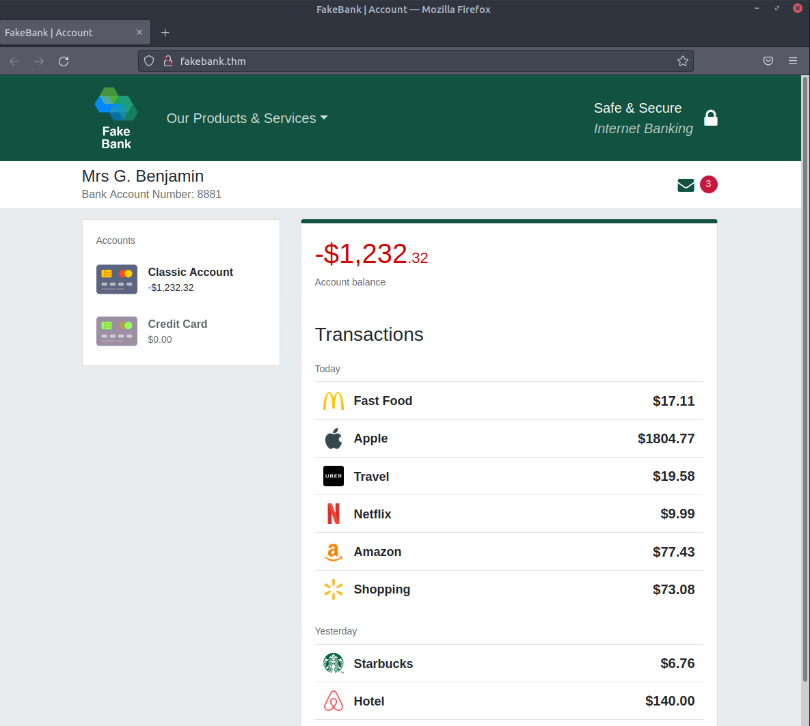

Stage 1 :

"To outsmart a hacker, you need to think like one." This is the core of "Offensive Security." It involves breaking into computer systems, exploiting software bugs, and finding loopholes in applications to gain unauthorized access. The goal is to understand hacker tactics and enhance our system defences. Beginning Your Learning Journey In this TryHackMe room, you will be guided through hacking your first website in a legal and safe environment. The goal is to show you how an ethical hacker operates. But before we do that, let's review by answering the questions below. Type your answer in the text box after the question and click the "Submit" button. When you're done, proceed to Task 2. Answer the questions below Which of the following options better represents the process where you simulate a hacker's actions to find vulnerabilities in a system? Offensive Security Defensive Security Offensive Security
Stage 2 :
Here at TryHackMe, we use Virtual Machines to create simulated environments that serve as practical complements to rooms. In this room, we have prepared a fake bank application called Fakebank that you can safely hack. To start this machine, click on the Start Machine button below. Your screen should be split in half, showing this content on the left and the newly launched machine on the right. If you hide it later, you can always click on the Show Split View button at the top to display it again. You should see a browser window showing the website below:

Stage 3 :
How can I start learning? People often wonder how others become hackers (security consultants) or defenders (security analysts fighting cybercrime), and the answer is simple. Break it down, learn an area of cyber security you're interested in, and regularly practice using hands-on exercises. Build a habit of learning a little bit each day on TryHackMe, and you'll acquire the knowledge to get your first job in the industry. Trust us; you can do it! Just take a look at some people who have used TryHackMe to get their first security job: Paul went from a construction worker to a security engineer. Read more Kassandra went from a music teacher to a security professional. Read more Brandon used TryHackMe while at school to get his first job in cyber. Read more What careers are there? The cyber careers room goes into more depth about the different careers in cyber. However, here is a short description of a few offensive security roles: Penetration Tester - Responsible for testing technology products for finding exploitable security vulnerabilities. Red Teamer - Plays the role of an adversary, attacking an organization and providing feedback from an enemy's perspective. Security Engineer - Design, monitor, and maintain security controls, networks, and systems to help prevent cyberattacks. Answer the questions below Read the above, and continue with the next room!